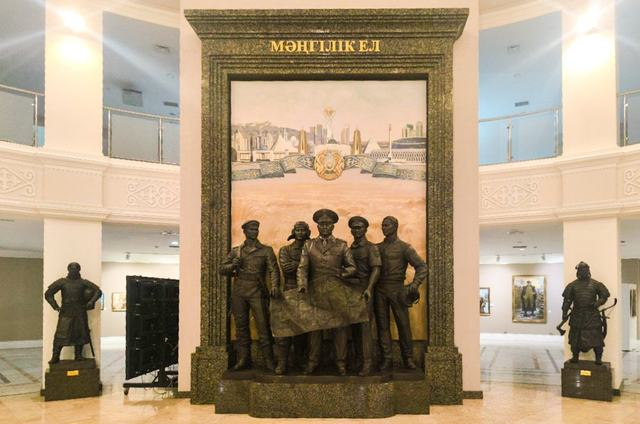
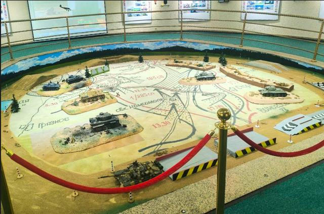
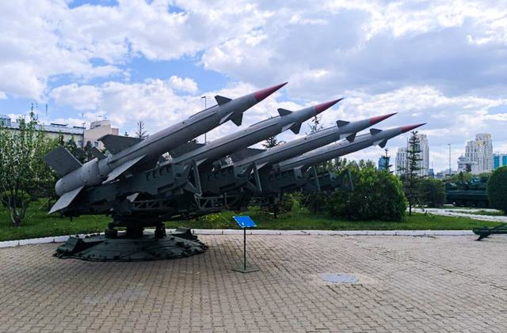

Военно-исторический музей Вооружённых Сил Республики Казахстан
От степных воинов древности до вооружённых сил независимой страны — пройдите по военной истории Казахстана зал за залом.

Музей в цифрах
- 7 — выставочных залов
- ≈20,000 — предметов (оценка Visit Astana)
- 10 — остановок в маршруте посетителя
- 1998 — год постройки здания музейного комплекса
Пройдите по истории
Экспозиция построена в хронологическом порядке. Начните под куполом атриума, пройдите путь от древности до независимости и завершите осмотр среди техники под открытым небом.

1. Атриум «Мәңгілік Ел»
Сердце здания: бронзовый монумент, связывающий воинов древности с сегодняшними вооружёнными силами.

2. Древность – XIX век
Доспехи, луки, шлемы и погребение коня из военного мира степи.

3. Военная история XX века
Алашский период, Великая Отечественная война и война в Афганистане.

4. Вооружённые Силы Казахстана
От создания вооружённых сил в 1992 году до современных сухопутных, противовоздушных и военно-морских сил.

5. История танковых войск
Бронетанковая война, рельефная карта сражения и интерактивная презентация.

10. Военная техника под открытым небом
Ракеты, катера и бронетехника под открытым небом.
Больше, чем музей
Военно-исторический музей входит в состав Национального военно-патриотического центра Вооружённых Сил. Здание музея — это не только экспозиции: в нём также находятся концертный зал, зал временных выставок, а также размещаются Центральный военный оркестр и Центральный ансамбль Министерства обороны.
Музей определяет свою работу как сохранение военного наследия, научные исследования, музейное образование и патриотическое воспитание. Экспозиции представляют военную историю от древности до современности через археологические предметы, оружие, документы, форму, произведения искусства и военную технику.

Внутри коллекции
Несколько вещей, которые встретятся на пути. Нажмите на фото, чтобы открыть его крупнее.


Почему этот музей важен
Музей объединяет сохранение наследия, исследования и образование. Научная работа 2025 года описывает Военно-исторический музей в Астане как специализированный музей, представляющий память о Великой Отечественной войне и более широкую военную историю Казахстана.
Коллекцию можно изучать не только как набор предметов, но и как способ проследить изменения в военной организации, вооружении, военном искусстве и исторической памяти.
Хотите посетить музей?
Адрес, телефоны, а также различающиеся часы работы и цены на билеты по данным разных источников — на странице планирования визита.